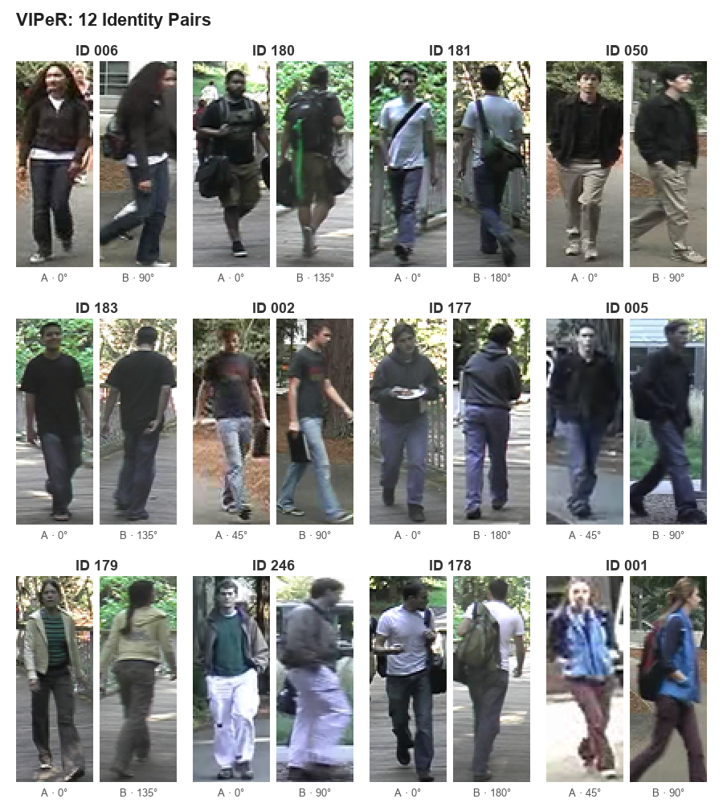
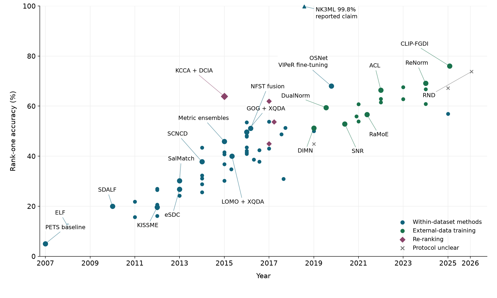
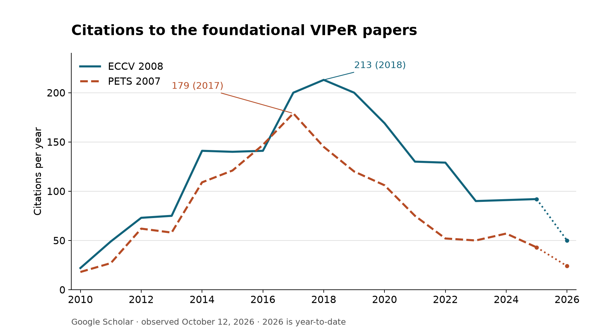

Reflections on 20 Years of Person Re-ID
Measuring the problem, watching the field grow, and reconsidering the purpose of the work.
Twenty years ago, I started building VIPeR to test whether a computer could recognize the same person across different cameras. It's a small dataset by today's standards: two images each of 632 people. But it became a widely used benchmark, and those tiny images still give today's AI models trouble. Revisiting it has reminded me how much progress starts with deciding what to measure, collecting the right data, and being willing to get a disappointing result. That's a lesson I've carried through much of my career. It's also brought me back to a less comfortable part of the story. VIPeR gave me a promising start in surveillance research, just as I was becoming unsure that making people easier to track was what I wanted to do. What would happen when we got good at this?
The appearance problem between cameras
Multi-camera surveillance systems were becoming an active research area. Tracking within one camera was already difficult, but expanding coverage introduced another question: when a person appeared in a second camera, was it someone the system had seen before?
Overlapping fields of view could provide geometric constraints. Nearby cameras could provide timing constraints: someone who left one view might enter another a few seconds later. Those cues were useful, but could become weak or unavailable when cameras were farther apart, their views didn't overlap, or the task was to search old footage without knowing when the person would appear.
Appearance was another source of evidence, and it was the one a human would naturally use. A person looking through video could compare clothing, shape, texture, and what someone was carrying. We needed a model that could make those comparisons despite changes in viewpoint and illumination, and a reliable way to test it across that variation.3
In 2006, I read Gheissari and colleagues' paper on recognizing people across cameras. The accuracy looked impressive, but the evaluation used just 44 people, seen largely from the front.1 That was a much easier problem than the one I knew from undergraduate research on crowd counting.
The issue wasn't whether a recognition method could work in the setting that paper studied. It was what the results told us about finding someone from an arbitrary camera angle, with different lighting, a different pose, and hundreds of plausible matches. How could we make progress on the real problem without measuring it properly, even if a realistic test seemed impossibly difficult? That question led me to start collecting the Viewpoint Invariant Pedestrian Recognition dataset, VIPeR.
Building VIPeR
In 2003, I took Professor Hai Tao's undergraduate multimedia class. There were only three students. The next quarter, at his invitation, I was taking graduate computer vision, and before I graduated I was doing research with his Ph.D. students. He recognized my interest and ability and gave me a place in the research community. I stayed on for the Ph.D. with him as my adviser, and I owe him my start in the field.
My first real research project was crowd counting: estimating how many people were in a scene, sometimes 50 or 100 of them moving through it. People overlapped, faced different directions, and appeared at different scales, often from an awkward camera angle. We were trying to count them rather than recognize them, but those images shaped my sense of what a realistic recognition problem would have to include.
Some of the other work in the lab was adapting color correlograms for object tracking.31 In content-based image retrieval, or CBIR, we were trying to represent appearance with hand-designed color and texture statistics. A histogram could tell us how much blue or gray was present, but not how those colors were arranged. Correlograms added information about how often colors occurred at different distances from one another. Looking back, these were primitive descriptions of a person. At the time, finding a way to preserve even a little more structure was useful progress.
That dependence on color extended to the cameras themselves. When we set out to collect VIPeR, we used two video cameras Hai had purchased. I still remember his enthusiasm for their three-CCD design, with separate sensors for red, green, and blue. Today we take good color video for granted; then, capturing it well was part of getting the appearance model to work.
We hired an undergraduate to help capture footage, with both cameras running at the same time. Once we had the recordings, the challenge was finding the same person in both views. I built a tool to draw bounding boxes and record the correspondences, but each match still had to be found by hand. Building the benchmark meant doing, over and over, the very task we wanted a computer to help with.
That work helped shape how I've approached research ever since. Most of the important projects in my career have begun with the same questions: what data do we need to collect, how should we annotate it, and would a better result on this evaluation mean progress on the problem we actually care about?
The final dataset contained two images of each of 632 identities: 1,264 images in total, each normalized to 48 pixels wide by 128 pixels tall. Most pairs differed in viewpoint by at least 90 degrees. The range of identities and the variation between the paired views were what made it useful.2 My coauthor Shane Brennan (ID 246) and I (ID 050) are in there too.


The evaluation protocol was another contribution of the PETS paper. We wanted to measure appearance matching separately from the geometry and timing constraints of a complete tracking system. A good end-to-end result could depend on overlapping camera views or predictable travel times without revealing how well the appearance model worked on its own. VIPeR let us compare those models without relying on either cue.
We evaluated appearance matching as a search task: given an image of a person and a gallery from another camera, where did the correct match appear? We used the cumulative matching characteristic, or CMC: how often was it among the first k results? Making ranking and gallery size explicit connected the evaluation to the task of narrowing a search for a human operator.2
Too difficult to publish?
Early versions were rejected from CVPR and ICCV before the work found a home at the PETS workshop in 2007. As I remember it, reviewers cited the low accuracy as one of the main flaws: they didn't believe the method worked. To me, that difficulty meant we'd finally included important parts of the problem. We needed to measure the gap before we could close it.
The best rank-one baseline in the 2007 PETS paper, a color correlogram with manually localized body regions, reached roughly 5 percent, as read from its CMC plot.2 Our Ensemble of Localized Features, published at ECCV in 2008, reached about 12 percent. ELF used AdaBoost to select useful local color and texture features and combine their comparisons into a learned similarity function.3 It was progress, but clearly left most of the problem unsolved.
Ranks beyond the first mattered because we envisioned a system assisting a human operator. The 2008 paper reported that ELF placed the correct match within the first 31 results of a 316-image gallery about 70 percent of the time. The point was not simply to report a larger accuracy number. Sorting the gallery could reduce the work of finding the right person while leaving the final decision to an operator.
We quantified that idea with an expected-search-time model. Assuming an operator could review one image per second without making mistakes, the expected search took 158 seconds with an unsorted gallery and 28.9 seconds with ELF: an 81.7 percent reduction. These were modeled search times, not timings from a user study, but they made the intended benefit explicit.3
What changed as the field grew
Looking back, what stands out is how much researchers kept finding in these tiny crops. SDALF and LOMO/XQDA made better use of body layout, color, and texture, while metric learning helped decide which differences mattered.456 Neural methods then learned the features as well as the comparison.8 A shared benchmark let us see what each approach contributed, and what it still missed.
The more interesting change was in the role of the dataset itself. VIPeR offered little data for learning a representation from scratch, but a useful test of one trained elsewhere: could it handle a camera pair it had never seen?92829 CLIP-FGDI, for example, adapted a pretrained vision-language model and reported 76 percent rank-one accuracy in 2025.26 The chart records both better matching methods and the growing amount of training data behind them.


Use of the benchmark grew through much of the 2010s. Annual citations to the PETS and ELF papers peaked in 2017 and 2018. By October 2026, Google Scholar listed 1,405 and 2,016 citations respectively. New papers still cite them, but the pace has slowed as the field has moved to larger and more varied datasets.


Outgrowing the benchmark
In 2015, Market-1501 made the limitations of the older benchmarks explicit: small identity sets, few cameras, hand-drawn boxes, and too little variation to represent deployment. It introduced more than 32,000 detector-produced boxes for 1,501 identities across as many as six cameras.10 MARS extended the task to video tracklets in 2016.11 Later datasets added occlusion, infrared imagery, larger galleries, domain shift, and people who were absent from the gallery altogether.
VIPeR hasn't disappeared. A CVPR 2026 study of lifelong re-identification still includes it among seven unseen test datasets, alongside five training datasets.27 Its headline unseen-domain results are averages across those datasets, not individual VIPeR scores. That's another way the question has changed: from learning a matcher for one camera pair to retaining useful representations as new domains arrive.
VIPeR was superseded, which is a good outcome for an early benchmark. It helped establish a measurable problem and then revealed what the next evaluations needed to include. Its small, carefully cropped images remain useful for studying a particular matching task, but high performance there cannot establish how a system behaves in a city, with detection errors, changing clothes, and an unknown population.
Those small crops can still be hard to match. In 2011, Cheng and colleagues asked 18 people to find matches among 45 candidates. They got their first choice right about 75 percent of the time.13 The pairs had been picked for difficulty, and there were fewer candidates than in the typical 316-image gallery. It shows that people can struggle with these crops too; it doesn't tell us what they'd score on the larger test. When we annotated VIPeR, we could watch frames before and after a person appeared. The released crops contain less information: knowing the correspondence from the footage does not mean the two still images make it unambiguous.
While writing this retrospective, I tried Claude on VIPeR with help from an AI coding agent. After a little prompt tuning, Haiku 5.5 put the correct match first about 50 percent of the time. Asking Opus 5.5 to rerank its top 30 candidates brought that to about 60 percent, without fine-tuning either model.14 That's below the strongest specialist results, but impressive for so little task-specific work. Given what today's frontier models can do, I'd expected Claude to have an easier time with these images. Twenty years later, VIPeR still gave it plenty of trouble.
Even so, I hadn't needed to train a dedicated re-identification model; I could ask a general-purpose assistant to do the matching. Deciding when that capability should be used isn't just a choice for researchers who set out to build surveillance systems.
A promising career, and a question I couldn't set aside
I started at UC Santa Cruz about a week after the terrorist attacks of September 11, 2001. People were scared, and preventing another attack felt urgent. When I began learning computer vision in 2004, surveillance research was often pitched as a way to protect airports and critical infrastructure. In that atmosphere, the argument for trading some privacy for security was persuasive. Tracking people across cameras seemed like a technical problem with an important public purpose.
By the time VIPeR was gaining attention, staying in the field would have made sense. I knew the problem, I'd built a benchmark people wanted to use, and there was plenty left to work on. Companies wanted this technology too. I could have kept building on what I'd already done.
But a few years into the Ph.D., I began questioning the application. Before advancing to candidacy in 2008, I changed my proposed dissertation title to Privacy Preserving Pedestrian Recognition. I was trying to find a way to continue the research while addressing the concern that it would make people easier to track.
The concern became more concrete because Hai was also building Vion, a surveillance software company. My understanding at the time was that its largest customer was the Chinese government. This wasn't an unusual direction for computer vision then; much of the field's funding and commercial momentum pointed toward surveillance. But seeing that path up close, from matching people across two cameras to tracking them across a city, made the question hard for me to treat as abstract. I didn't want that to be the purpose of my own work.
I could propose technical safeguards, but the decision to preserve privacy depended on policy. Avoiding a particular biometric didn't answer whether someone should be tracked. Who could search the camera network? Whose movements could be reconstructed? For what purpose, with what oversight, and with what possibility of refusal? Better features or a formal privacy guarantee could answer only part of that. This became one of several reasons I never finished the Ph.D., and probably one of the larger ones.
I went on to spend much of my career working on visual search at Amazon. Many of the technical questions were familiar: recognizing things across viewpoints, learning representations, and finding a match in a large gallery. But I was matching products rather than people. The research interests remained; the purpose of the work was different.
The current debate about Flock cameras brings me back to the policy question: who gets to decide whether a community should be tracked? Reading a license plate is, at its core, optical character recognition: recovering an explicit identifier that is already printed on a vehicle. It has its own difficult imaging conditions, and Flock also searches vehicle characteristics beyond the plate.15 But I don't walk around the city with a license plate on. Person re-identification tries to make someone searchable across cameras using appearance alone. In that sense it could provide a license-plate-like tracking capability for people who carry no such identifier, with the potential to be even more intrusive.
In September 2026, my own neighborhood, Ladera in Portola Valley, voted to end its Flock camera contract because of privacy concerns. That brought the question out of research papers and into the place where I live. The decision was about whether we wanted this form of surveillance in our community, not whether the cameras could read plates more accurately.
Looking back, I'm proud that VIPeR helped people measure a difficult problem instead of avoiding it. That doesn't resolve my doubts about what we made easier to do. The question that got me started was whether we could recognize people across cameras. The question I couldn't set aside was what would happen when we could. As researchers, we decide what we make easier. The people who live with those systems should get to decide whether they want them.
VIPeR dataset download, documentation, and citation guidelines
Sources and notes
These references cover the text and the methods labeled in the performance chart.
- N. Gheissari et al., Person Reidentification Using Spatiotemporal Appearance, CVPR 2006.
- D. Gray, S. Brennan, and H. Tao, Evaluating Appearance Models for Recognition, Reacquisition, and Tracking, PETS 2007.
- D. Gray and H. Tao, Viewpoint Invariant Pedestrian Recognition with an Ensemble of Localized Features, ECCV 2008.
- M. Farenzena et al., Person Re-Identification by Symmetry-Driven Accumulation of Local Features, CVPR 2010.
- M. Köstinger et al., Large Scale Metric Learning from Equivalence Constraints, CVPR 2012, Table 2(a); authors' code and documentation.
- S. Liao et al., Person Re-Identification by Local Maximal Occurrence Representation and Metric Learning, CVPR 2015; authors' results.
- T. Matsukawa et al., Hierarchical Gaussian Descriptor for Person Re-Identification, CVPR 2016. Labeled GOG + XQDA in the chart.
- W. Li et al., DeepReID: Deep Filter Pairing Neural Network for Person Re-identification, CVPR 2014.
- L. Zheng, Y. Yang, and A. G. Hauptmann, Person Re-Identification: Past, Present and Future, 2016. See also Karanam et al.'s systematic benchmark and Ye et al.'s deep-learning survey.
- L. Zheng et al., Scalable Person Re-Identification: A Benchmark, ICCV 2015.
- L. Zheng et al., MARS: A Video Benchmark for Large-Scale Person Re-Identification, ECCV 2016.
- Google Scholar article histories for PETS 2007 and ECCV 2008, observed October 12, 2026. The plotted range is 2010–2026, the common range displayed in the two histories.
- D. S. Cheng et al., Custom Pictorial Structures for Re-identification, BMVC 2011, Section 4.3 and Figure 6(e). Eighteen people completed 180 trials on 45 selected pairs; the approximate first-choice accuracy is read from the plot. The legend's 98.56 is normalized CMC area, not rank-one accuracy. The often-cited 71.08 percent in Liu et al.'s POP study, ICCV 2013, Table 2, is a human-assisted ranking result after three feedback rounds, not unaided human accuracy.
- Exploratory experiment completed in October 2026: one frozen 316-identity test half, both camera directions, no VIPeR weight training. After excluding identities used for prompt development, Haiku scored 296 of 606 queries correctly at rank one (48.8 percent); top-30 Opus reranking scored 355 (58.6 percent). Three malformed rankings count as failures. This is one split, not a five-repeat estimate or a blind test; earlier diagnostics inspected some evaluation images, and foundation-model pretraining exposure is unknown. Method, prompts, and measured results.
- Flock Safety, Vehicle Recognition Software for Investigation-grade LPR, 2026; describes plate reading and searches by vehicle appearance.
- R. Zhao, W. Ouyang, and X. Wang, Unsupervised Salience Learning for Person Re-identification, CVPR 2013, Table 1. The chart uses eSDC ocsvm with feature fusion.
- R. Zhao, W. Ouyang, and X. Wang, Person Re-identification by Salience Matching, ICCV 2013, Section 5 and Figure 5(a). Labeled SalMatch in the chart.
- Y. Yang et al., Salient Color Names for Person Re-identification, ECCV 2014, Table 1. The chart labels this SCNCD and uses Final(ImgF), including color-histogram fusion.
- S. Paisitkriangkrai, C. Shen, and A. van den Hengel, Learning to Rank in Person Re-identification with Metric Ensembles, CVPR 2015, Figure 1. Labeled Metric ensembles in the chart.
- J. García et al., Person Re-Identification Ranking Optimisation by Discriminant Context Information Analysis, ICCV 2015, Table 2. KCCA + DCIA includes gallery-context re-ranking.
- L. Zhang, T. Xiang, and S. Gong, Learning a Discriminative Null Space for Person Re-Identification, CVPR 2016, Table 1, Ours (Fusion), labeled NFST fusion in the chart.
- X. Jin et al., Style Normalization and Restitution for Generalizable Person Re-Identification, CVPR 2020, supplementary Table 5. The chart uses SNR's five-source setting, including DukeMTMC-reID; the alternative four-source setting reports 55.1 percent.
- Y. Dai et al., Generalizable Person Re-Identification with Relevance-Aware Mixture of Experts, CVPR 2021, Table 2, Protocol 1, labeled RaMoE in the chart. Protocol 2 uses different source datasets and reports 63.4 percent.
- P. Zhang et al., Adaptive Cross-Domain Learning for Generalizable Person Re-Identification, ECCV 2022, Table 1. ACL uses four source datasets, omitting DukeMTMC.
- R. Nie et al., Rethinking Normalization Layers for Domain Generalizable Person Re-Identification, ECCV 2024, Table 1. Labeled ReNorm in the chart.
- H. Zhao, L. Qi, and X. Geng, CILP-FGDI: Exploiting Vision-Language Model for Generalizable Person Re-Identification, IEEE TIFS 2025, Table I; authors' implementation. The title spells the acronym CILP-FGDI; the method and code use CLIP-FGDI. The chart uses the main-table 76.0 percent, not the 77.5 percent hyperparameter-ablation result in Table VIII.
- K. Xu et al., Vision-Language Attribute Disentanglement and Reinforcement for Lifelong Person Re-Identification, CVPR 2026; supplementary Tables 3-4. UnSeen-Avg combines seven datasets and is not a VIPeR rank-one result.
- J. Song et al., Generalizable Person Re-Identification by Domain-Invariant Mapping Network, CVPR 2019, Table 2.
- J. Jia, Q. Ruan, and T. M. Hospedales, Frustratingly Easy Person Re-Identification: Generalizing Person Re-ID in Practice, BMVC 2019, Table 5. The chart uses ResNet50 + DualNorm; the main MobileNetV2 configuration reports 53.9 percent.
- K. Zhou et al., Learning Generalisable Omni-Scale Representations for Person Re-Identification, October 2019 preprint, Table 4. The chart's OSNet result includes VIPeR fine-tuning after external re-identification pretraining.
- Q. Zhao and H. Tao, Object Tracking Using Color Correlogram, IEEE VS-PETS 2005, pp. 263-270.